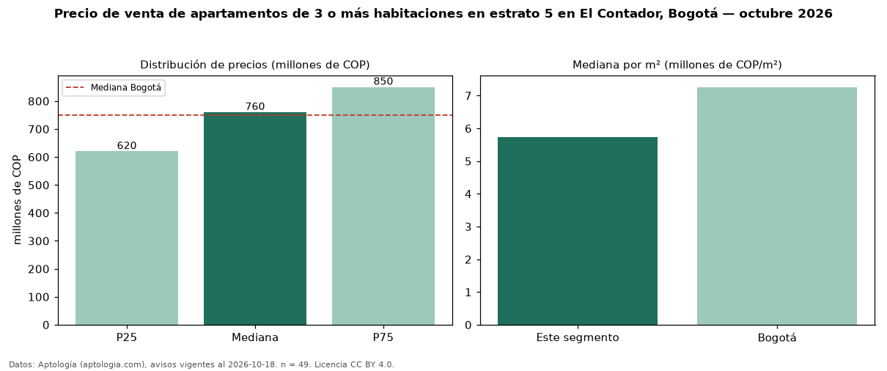

Precio de venta de apartamentos de 3 o más habitaciones en estrato 5 en El Contador, Bogotá — octubre 2026
Con 49 avisos vigentes, el precio mediano de apartamentos de 3 o más habitaciones en estrato 5 en venta en El Contador (localidad de Usaquén), Bogotá es COP 760 millones. Eso es 16 % más que la mediana de los apartamentos en estrato 5 en venta de El Contador (COP 654 millones, n = 84); este segmento reúne el 58 % de esos avisos. Por metro cuadrado, la mediana es COP 5,73 millones/m² (n = 49), 13 % por debajo de los apartamentos en estrato 5 en venta de El Contador (COP 6,61 millones/m²). El área mediana anunciada es 130 m². La administración mediana declarada es COP 840.000 al mes (n = 46). La mediana de todos los apartamentos en venta de Bogotá es COP 750 millones (+1 % de diferencia). La mitad central de los avisos va de COP 620 millones a COP 850 millones (razón 1,4), una dispersión baja. Datos: Aptología (aptologia.com), CC BY 4.0 — https://www.aptologia.com/venta/bogota/el-contador. Archivos: PDF, CSV con las cifras y gráfica PNG.

| Avisos únicos | 49 |
|---|---|
| Percentil 25 | COP 620.000.000 |
| Mediana | COP 760.000.000 |
| Percentil 75 | COP 850.000.000 |
| Mediana por m² | COP 5.729.166 |
Fuente: avisos vigentes de portales inmobiliarios recopilados por Aptología, deduplicados (mínimo 30 avisos únicos por celda). Precios pedidos, no cerrados. Fecha: 2026-10-18.